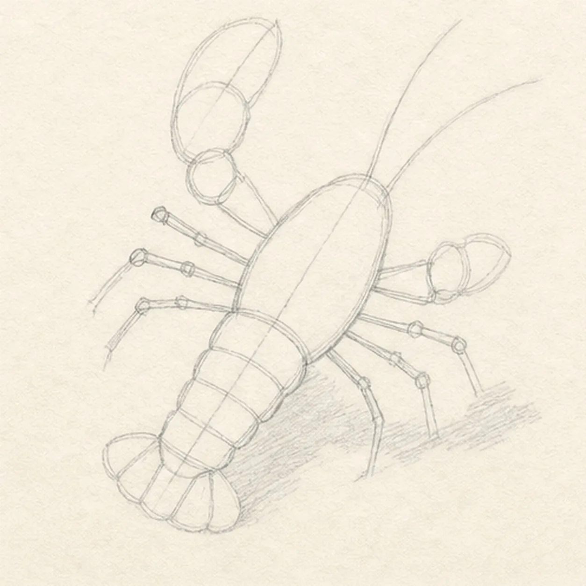
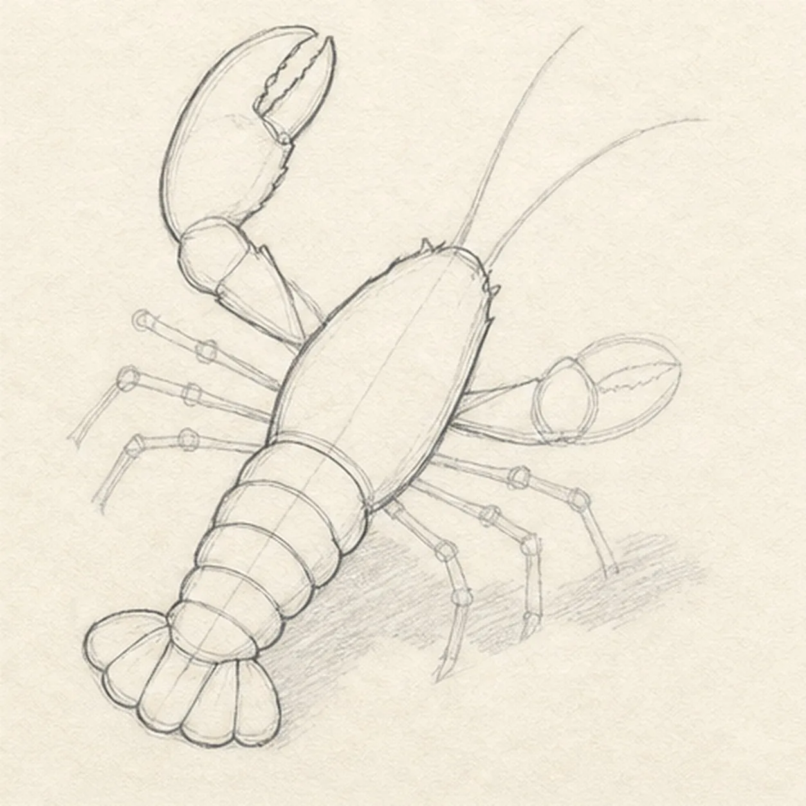
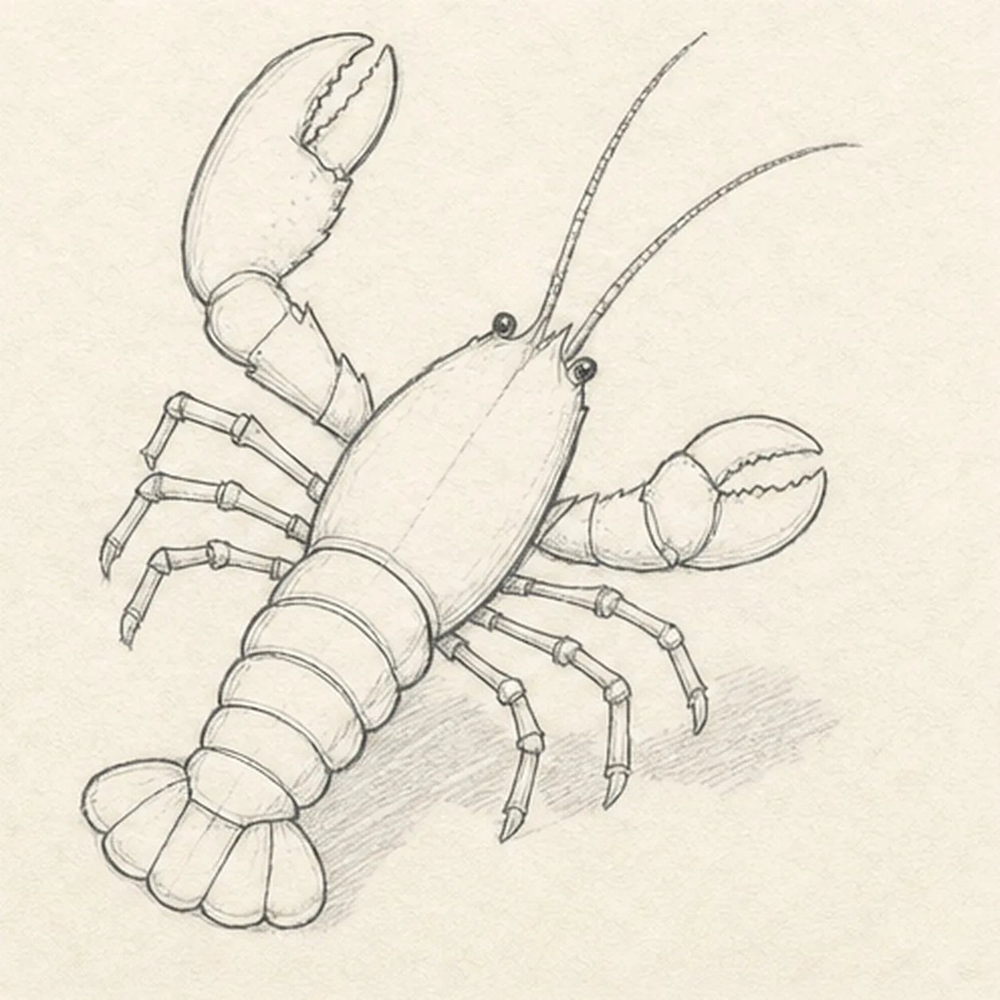
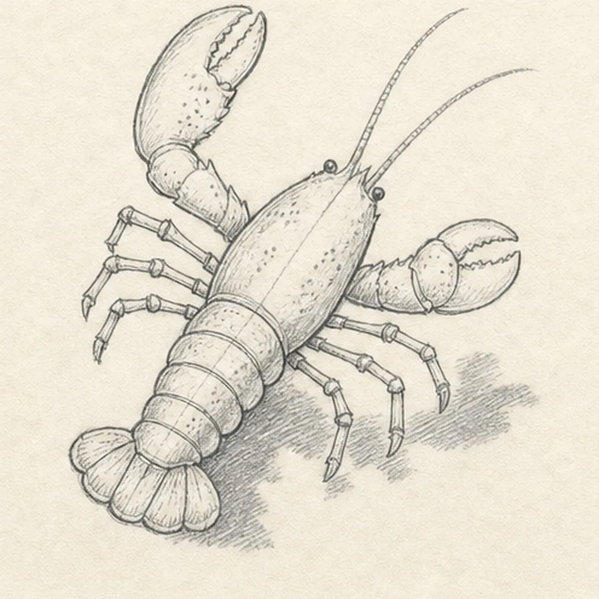
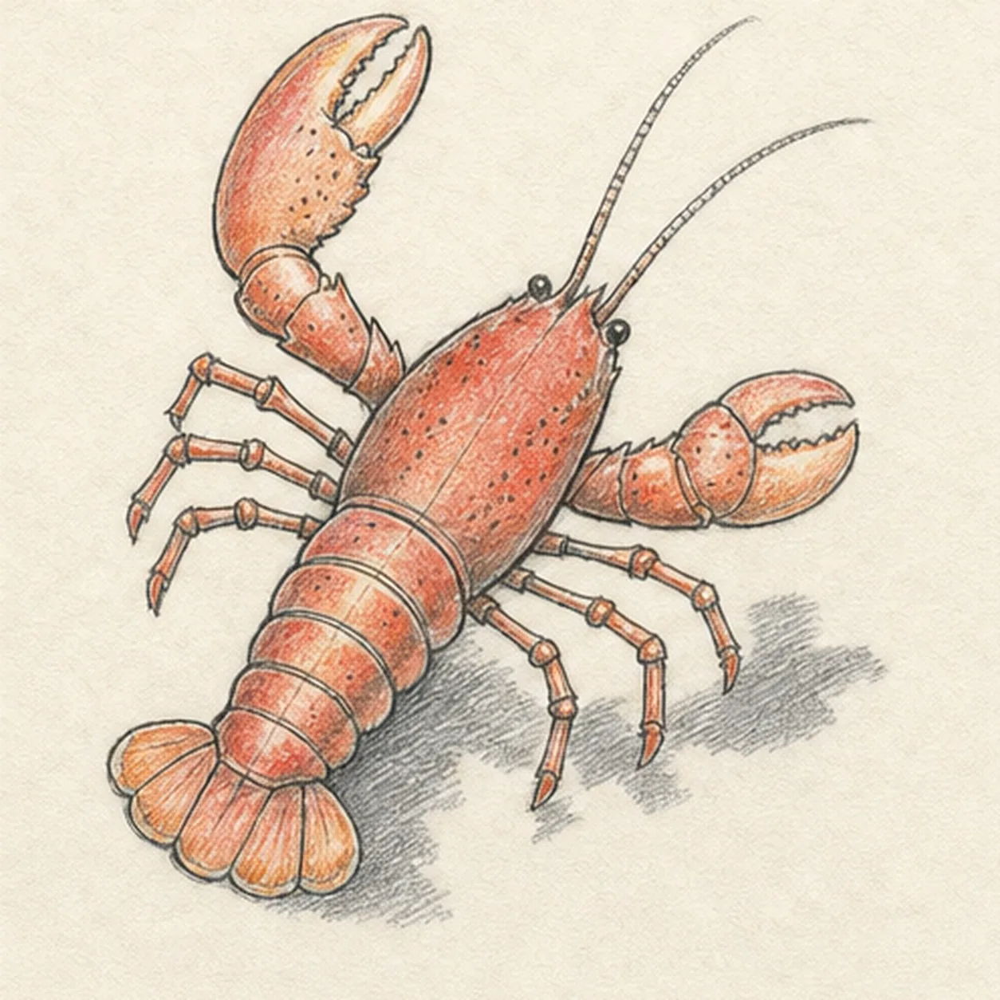

From the archive
Let's draw a lobster with one raised claw
Treat this as one small practice round: build the subject lightly, notice the shapes, then darken only the lines that help the finished sketch.
-
01

Set the lobster gesture
Draw a pale diagonal center axis, place a long carapace oval and abdomen blocks on it, then map one raised and one lower claw, exactly seven visible leg routes, two antennae, a five-part tail-fan envelope, and one broken shadow footprint.
Sketch tip: Ghost the diagonal before touching down, then compare the empty paper between each claw and the body. Reserve the raised claw's overlap so one hidden front leg does not need to be drawn and erased later.
-
02

Shape the shell and claws
Wrap the guides with the complete carapace, two distinct claw silhouettes, the segmented abdomen edge, and all five tail-fan lobes while keeping the leg and antenna routes visible.
Sketch tip: Build each claw from two large opposing wedges instead of drawing every tooth at once. Trace the body silhouette from claw to tail and make sure the abdomen narrows steadily before it opens into the fan.
-
03

Add legs and shell joints
Place two eyes, trace both long antennae, draw exactly seven visible walking legs around the reserved raised-claw overlap, and add the abdomen bands and joints inside both claws.
Sketch tip: Draw each leg from the body outward in two or three angled segments, then turn the page to pull the antenna curves from base to tip. Count three legs below the raised claw and four on the opposite side.
-
04

Map the shell texture
Add a few shell spots, joint creases, tail-fan veins, short contour hatching, and the established broken cast shadow beneath the body.
Sketch tip: Follow the shell curve with short grouped marks and leave larger quiet patches between them. Stop every hatch at an existing joint or edge so the hard plates remain readable.
-
05

Shade the coral shell
Layer graphite into the established shell planes, add coral red and muted orange to the carapace, claws, abdomen, legs, and tail fan, preserve cream paper highlights, and deepen the broken shadow.
Sketch tip: Pull colored-pencil strokes along each shell plate instead of across the joints. Keep the eyes and deepest overlaps darkest, then leave narrow paper gaps on the claws and abdomen for a dry, tactile shine.
-
06

Settle the raised-claw finish
Strengthen selected keeper contours, deepen the established graphite and colored-pencil values, clarify cream highlights, and soften only the pale construction guides that distract.
Sketch tip: Count one lobster, two claws, seven visible legs, two antennae, and five tail-fan lobes, then trace the silhouette without finding a jump. Your shell spots and coral tones can vary while the same diagonal construction stays useful.
![Handmade graphite and restrained colored-pencil sketch of one left-facing muted-ochre seahorse with one horse-like head and long snout, one three-point crown ridge, one visible eye, one arched neck and rounded belly, one tapering clockwise-curled tail wrapped exactly once around one teal-green eelgrass stem, one ribbed dorsal fin, exactly two small side fins, exactly seven curved torso plates, exactly five narrow eelgrass leaves, exactly two pale-blue bubbles, exactly two open-paper highlights, visible paper tooth, and one broken cool-gray ground shadow](../assets/seahorse-curled-around-eelgrass-finished-v1.webp)